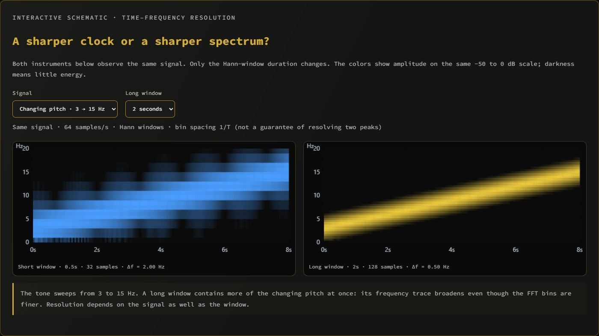
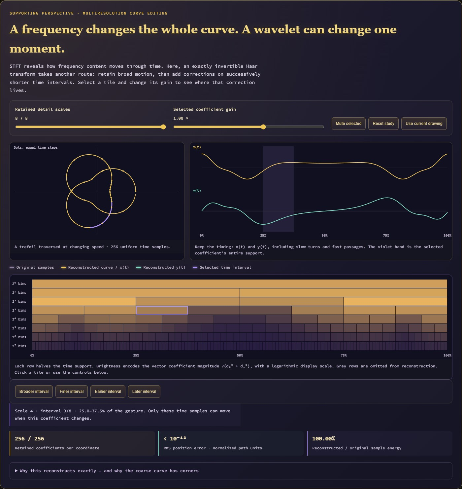
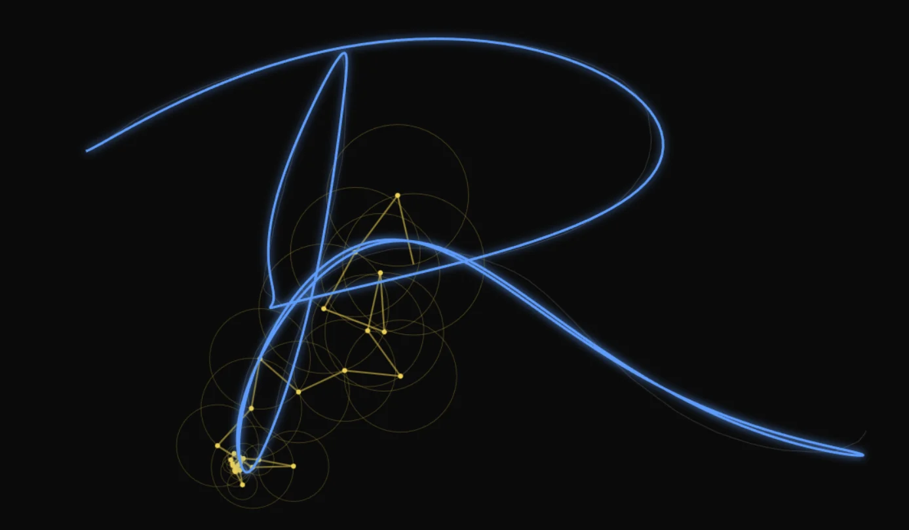

Interactive application
Interactive
Overview · selected highlights
Drawing with harmonics
A drawing is a timed performance, not only an outline. Keep a gesture's changing speed and inspect its moving STFT spectrum, then compare global Fourier selection, cosine symmetry, pinned-end sine modes and local wavelet detail through their reconstructions.
TraceDecomposeRebuild
- t
Capture the gesture
Draw a path while retaining when and how quickly it was drawn.
- ω
Choose a decomposition
Compare local windows, global harmonics and alternative boundary conventions.
- ▥
Inspect the coefficients
Reveal moving spectral energy or the local detail being retained.
- ↺
Reconstruct the motion
Watch the selected components recover the path and its timing.
STFT makes the local tradeoff between time and frequency visible in a gesture you created.


